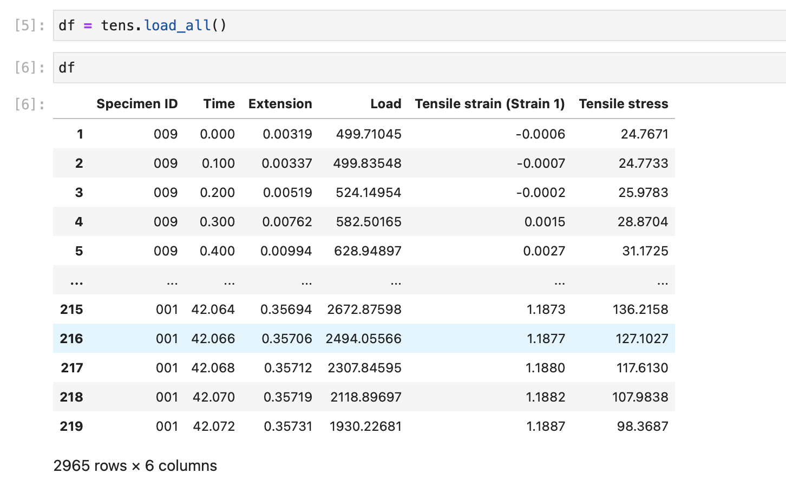
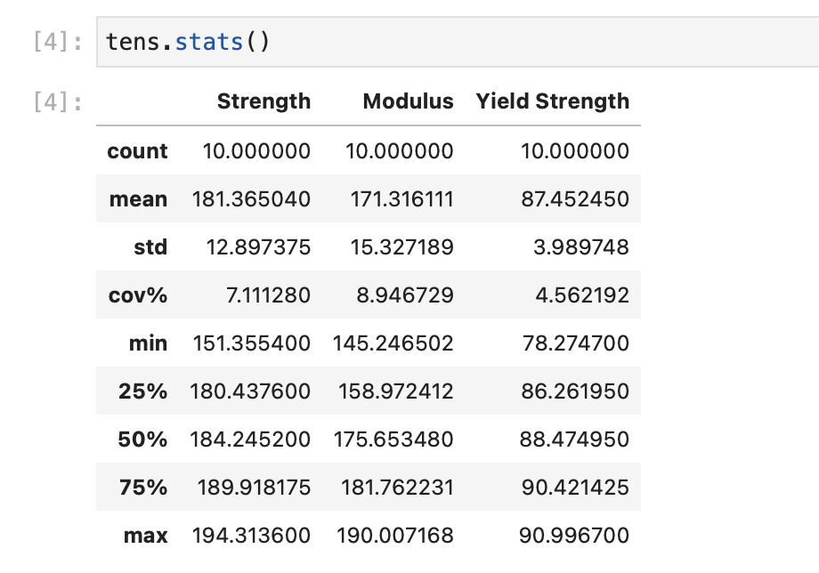

Usage¶
pymechtest is a super tiny package, it focusses on just a few common tasks, as such it's super easy to learn!
Installation¶
The very first thing you need to do is install pymechtest:
pip install pymechtest
This will install pymechtest and its core dependencies.
Getting Data In¶
All you have to do to get data into pymechtest is instantiate the class specific to your test method (pymechtest currently supports Tensile, Flexure, Shear and Compression static tests.
from pymechtest import Tensile
tens = Tensile(folder = "path/to/raw/data")
This path can either be a simple string as in the example above, or you can pass it a pathlib.Path or infact any osPathLike object...
from pymechtest import Tensile
from pathlib import Path
data = Path("path/to/raw/data").resolve()
tens = Tensile(folder = data)
Under the hood, pymechtest converts this to a pathlib.Path anyway so it can easily glob pattern match for csv files.
Now What?¶
Now you have your data in, you can do a few things with it.
Load to a Dataframe¶
If you know pandas and want to use its comprehensive functionality to manipulate your data, you can get your entire folder of data in a single dataframe...
from pymechtest import Tensile
tens = Tensile(folder = "path/to/raw/data")
df = tens.load_all()
This will recursively search your folder for csv files and load them all into a dataframe for you to do whatever you want with!

Summarise¶
If all you really want to see are the key values like elastic modulus, tensile strength etc for each specimen in your sample, use the .summarise() method...
from pymechtest import Tensile
tens = Tensile("path/to/raw/data")
tens.summarise()
This will extract key values such as elastic modulus, tensile strength, yield strength (if expect_yield = True we'll talk about this later.) for each specimen in your sample.

Stats¶
What if you just want a statistical summary of the data? Well you can do that too! Just use the .stats() method.
from pymechtest import Tensile
tens = Tensile("path/to/raw/data")
tens.stats()

Stress-Strain Curves¶
Making nice looking stress strain curves has always been the bane of my life. With pymechtest, a gorgeous graph is only a method away..
from pymechtest import Tensile
tens = Tensile("path/to/raw/data")
tens.plot_curves()
If you're working in a jupyter notebook or an IDE that supports them you will see the plot appear. You can also save the generated plot but we'll talk about that later too.

Column Autodetection¶
You may have noticed that in the examples above, we didn't specify which columns corresponded to stress or strain, and somehow we were still able to get yield strength and modulus etc.
This is because when you load your data in pymechtest will try to autodetect which columns are which in the background.
At the moment it does this quite naively by looking at your csv files, using the header argument and seeing which columns have the words "stress" or "strain" in them. If it can't find a match, you will see an error and it will ask you to specify which columns are which.
You do this by passing the name of the stress and strain columns (exactly as they appear in the raw data) to the stress_col and strain_col arguments:
from pymechtest import Tensile
tens = Tensile(folder = "path/to/raw/data", stress_col = "Tensile stress", strain_col = "Tensile strain (Strain1)")